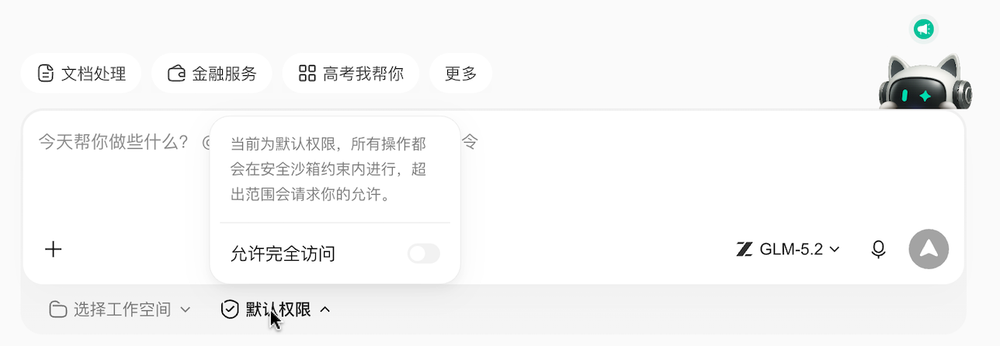
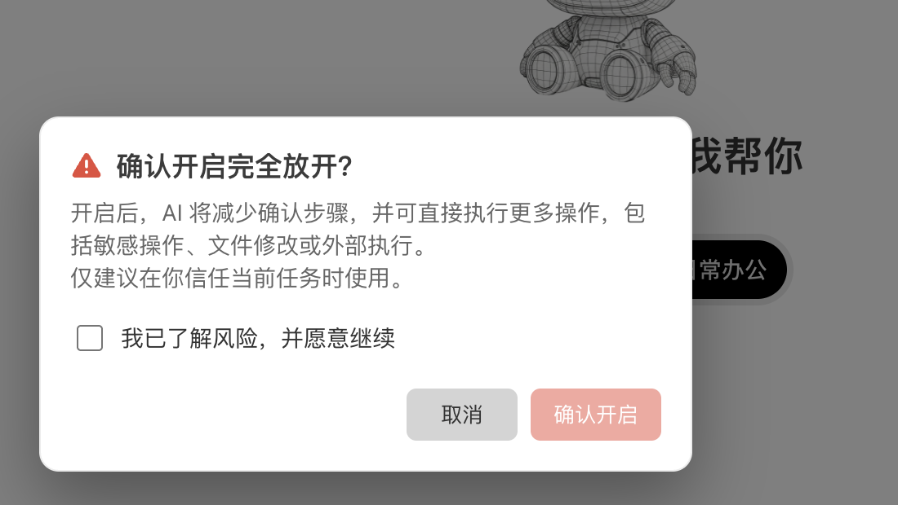

默认权限与安全沙箱
WorkBuddy 可以帮你读写文件、整理目录、生成文档，也可以在需要时调用脚本或外部程序。为了兼顾效率和安全，WorkBuddy 提供 默认权限 和 完全访问权限 两种权限模式。日常建议使用默认权限：让 AI 在工作空间内高效执行任务，但遇到高风险操作时先停下来向你确认。
你可以把它理解成一层安全护栏：日常处理任务时不挡路，真正要越过边界或执行危险动作时，会要求你再看一眼、点一次确认。
一、在哪里切换权限模式
在新建任务输入框下方，点击 默认权限 下拉菜单，可以在 默认权限 和 完全访问权限 之间切换。日常建议保持默认权限；只有在可恢复、可隔离的任务里，才短时间切到完全访问权限。

二、什么是工作空间
工作空间 是当前任务主要读取和保存文件的文件夹。你在新建任务时选择的目录，或 WorkBuddy 自动创建的任务目录，都会作为本次任务的工作空间。
建议把本次任务需要处理的文件放进同一个工作空间，例如：
周报整理发票归档客户资料清洗图片批量处理
这样 WorkBuddy 可以更顺畅地处理文件，也能让默认权限更准确地判断哪些操作属于本次任务范围。
建议
处理重要资料前，优先为任务新建一个独立文件夹，只把需要处理的副本放进去。默认权限可以减少误操作风险，但不能替代备份。
三、默认权限会保护什么
在默认权限下，WorkBuddy 重点保护的是重要资产和高风险动作。开启删除保护后，普通文件写入通常可以直接继续；但一旦涉及敏感路径、重要删除、脚本命令或网络等风险操作，WorkBuddy 仍会停下来让你确认。
通常需要确认：
| 操作类型 | 说明 |
|---|---|
| 写入受保护或敏感路径 | 避免覆盖密钥、凭据或安全配置 |
| 删除受保护文件、重要目录或批量删除 | 避免误删难以恢复的资料；普通单文件删除通常由删除保护兜底 |
| 执行脚本、命令或外部程序 | 可能修改文件、访问网络或影响系统环境 |
| 网络访问或敏感能力 | 命中安全中心规则或高风险能力时会要求确认 |
如果你取消确认，WorkBuddy 不会执行这一步。你可以继续和 WorkBuddy 对话，让它换一种更安全的处理方式，例如先列出将要删除的文件清单，或把结果保存到工作空间内。
沙箱还会额外提供几层保护：
- 命令会优先在沙箱约束下执行；如果被拦截，再按风险决定是否需要你确认。
- 删除保护会尽量通过安全删除或回收站降低误删风险。
- 文件备份会在修改已有文件前保存备份，新建文件不重复备份（当前仅 Windows 支持）。
四、为什么它比单纯脚本分析更稳
脚本分析通常是先看一段命令或脚本内容，判断它看起来是否危险。但实际执行时，风险可能来自很多地方：
- 脚本内部又调用了其它脚本或工具；
- 文件路径由运行时动态生成，开始时不容易完全看出来；
- 一个普通命令可能因为参数不同而删除、覆盖或移动大量文件；
- 外部程序的真实行为不一定能只靠脚本文本判断。
默认权限的保护点不只停留在“看起来像什么”，而是在 WorkBuddy 准备进行高风险操作时，再要求用户确认一次。也就是说，即使普通文件写入可以更顺畅地继续，只要下一步触发上面的确认条件，WorkBuddy 仍会把决定权交还给你。
这让默认权限更适合日常办公：AI 可以继续自动完成大部分低风险步骤，你也能在关键节点拦住可能造成损失的动作。
五、你会看到哪些确认
当 WorkBuddy 需要确认时，请重点看三件事：
- 操作内容：是写文件、删文件，还是执行脚本。
- 影响范围：目标路径是否在本次任务的工作空间内，是否会影响桌面、下载目录、项目源码或其它重要目录。
- 执行理由：这一步是否确实是完成任务所必需的。
如果你不确定，建议先取消，让 WorkBuddy 改为：
- 先展示将要修改或删除的文件清单；
- 先生成预览或备份；
- 把输出保存到工作空间内；
- 把脚本内容解释清楚后再执行。
六、什么是 Full Access（完全放开）
Full Access / 完全放开 会关闭上述二次确认。开启后，WorkBuddy 执行高风险操作时不会再逐步请求确认，包括写入文件、删除文件、执行脚本和调用外部程序。
这会显著减少确认弹窗，但也意味着：如果任务理解错了目录、脚本写错了路径，或外部工具行为不符合预期，操作可能直接影响你的电脑文件。
当你从下拉菜单切换到完全访问权限时，会看到确认弹窗。请先确认当前任务和文件都可恢复，再勾选风险确认并继续；不确定时直接取消，继续使用默认权限。

请谨慎开启
完全放开不等于更安全，也不会自动帮你判断所有风险。它只是把确认环节交给 AI 自动通过。建议只在完全可信的任务、隔离环境或临时测试目录中使用，例如 Docker、虚拟机、一次性工作目录。
不建议在以下场景开启完全放开：
- 正在处理生产资料、客户资料、财务资料或唯一副本；
- 工作目录靠近桌面、下载目录、个人文档根目录或项目仓库根目录；
- 任务会批量删除、批量重命名或覆盖文件；
- 任务需要运行你不了解的脚本或第三方工具；
- 当前电脑里有重要文件，且没有备份。
七、如何选择权限模式
| 场景 | 建议 |
|---|---|
| 日常文档生成、表格处理、资料整理 | 使用默认权限 |
| 第一次处理某类任务，或任务目标还不明确 | 使用默认权限，并优先让 WorkBuddy 先列计划 |
| 需要批量删除、移动或覆盖文件 | 使用默认权限，确认前仔细检查路径和清单 |
| 在隔离目录里反复运行可信脚本 | 可以短时间开启完全放开 |
| 在 Docker、虚拟机或临时测试环境中做实验 | 可以按需开启完全放开 |
| 生产环境、重要设备、唯一文件副本 | 不建议开启完全放开 |
八、推荐使用方式
- 先选好工作空间：为每个任务准备独立文件夹。
- 重要文件先备份：尤其是批量处理、删除、重命名任务。
- 默认使用默认权限：让 WorkBuddy 在关键风险点向你确认。
- 看懂确认弹窗再继续：重点检查操作类型、路径和影响范围。
- 不确定就取消：让 WorkBuddy 先解释、预览或生成清单。
- 完全放开用完即关：只在可信、隔离、可恢复的环境中短时间使用。
默认权限的目标不是让你频繁确认，而是在最容易造成损失的地方多一道确认。多数日常任务可以继续自动完成；真正可能修改电脑重要状态的动作，则由你最后把关。